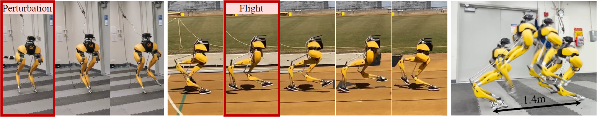

The International Journal of Robotics Research (IJRR 2024)
Zhongyu Li (1)Xue Bin Peng (2)Pieter Abbeel (1)Sergey Levine (1)Glen Berseth (3, 4)Koushil Sreenath (1)
(1) University of California, Berkeley(2) Simon Fraser University (3) Université de Montréal (4) Mila – Quebec AI Institute

Abstract
This paper presents a comprehensive study on using
deep reinforcement learning (RL) to create dynamic locomotion
controllers for bipedal robots. Going beyond focusing on a single
locomotion skill, we develop a general control solution that can
be used for a range of dynamic bipedal skills, from periodic
walking and running to aperiodic jumping and standing. Our RLbased
controller incorporates a novel dual-history architecture,
utilizing both a long-term and short-term input/output (I/O)
history of the robot. This control architecture, when trained
through the proposed end-to-end RL approach, consistently
outperforms other methods across a diverse range of skills in
both simulation and the real world. The study also delves into the
adaptivity and robustness introduced by the proposed RL system
in developing locomotion controllers. We demonstrate that the
proposed architecture can adapt to both time-invariant dynamics
shifts and time-variant changes, such as contact events, by
effectively using the robot’s I/O history. Additionally, we identify
task randomization as another key source of robustness, fostering
better task generalization and compliance to disturbances. The
resulting control policies can be successfully deployed on Cassie, a
torque-controlled human-sized bipedal robot. This work pushes
the limits of agility for bipedal robots through extensive realworld
experiments. We demonstrate a diverse range of locomotion
skills, including: robust standing, versatile walking, fast
running with a demonstration of a 400-meter dash, and a diverse
set of jumping skills, such as standing long jumps and high jumps.
@article{
2024-IJRR-Cassie-Locomotion,
author = {Zhongyu Li and Xue Bin Peng and Pieter Abbeel and Sergey Levine and Glen Berseth and Koushil Sreenath},
title ={Reinforcement learning for versatile, dynamic, and robust bipedal locomotion control},
journal = {The International Journal of Robotics Research},
volume = {0},
number = {0},
pages = {02783649241285161},
year = {0},
doi = {10.1177/02783649241285161},
URL = {https://doi.org/10.1177/02783649241285161},
eprint = {https://doi.org/10.1177/02783649241285161}
}